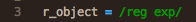
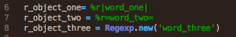
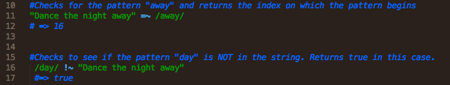
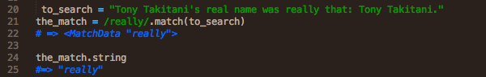
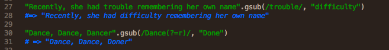
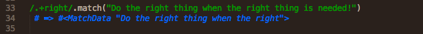
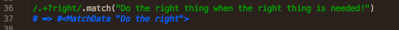

Regular Expression is one of those terms that seem prevalent when you're just getting into coding, yet chances to work specifically with it seem limited. This is because regular expressions deal with searching text, a form that is pervasive in our every day lives but not necessarily as common within the logic based coding languages.
What is a regular expression? It is a sequence that describes a pattern of characters. This is important to remember. It is not just a pattern, is a representation of a pattern that can be placed within the confines of whatever programming language you are using. In Object-oriented languages like Ruby and JavaScript, regular expressions are placed within objects. Because of this, you can send messages to them, pass them to messages, and do basically anything to them that you can do with other objects.
In Ruby there is a class called Regexp. The object created by its initialization is meant to hold the pattern to be searched for. It's useful to think of the Regexp object like you do the string object. It is an object but can be easily represented with a unique delimitation. Surrounding forward slashes mark a Rexexp object in Ruby:
You can also create a Regexp object using standard Ruby initializers and constructors. The constructor can take either a string or a Regexp object:
Regular Expressions are typically used to perform three fundamental operations: testing, extracting, and altering.
The most basic is testing. You can test in ruby using the~= comparison operator. By comparing a string with a regular expression object, you locate the index on which the pattern begins. You can also use ~! to test if the pattern is not in the string. This returns a boolean. As you can see, the order of the comparison does not matter:
Beyond this, you can use the match method of a regular expression object to return a MatchData object. This is important and functional because, again, you can do many things with an object. And the MatchData object is custom built to work around patterns that you would want to manipulate! You can convert it back into a string by using the string method, for instance.
MatchData objects are array-like objects. When you match returns more than one match, you can use bracket notation to find a specific element of the object.
Alterations can be performed on strings with the gsub method. You search the string for your pattern and then substitute, in the string, the second argument of the method. A copy is returned; the original is not altered.
Regular expression searches can be modified with quantifiers. Quantifiers mark how many times you want to find an expression. For instance, the plus, +, quantifier says to search for a pattern that appears one or more times. The important thing to remember about quantifiers is that they search the passed string in a specific order. The entire string can be searched as a whole, individual elements of the string can be searched, and the search can quit at any specified time or wait until all types of searches are exhausted.
A search therefore can either be greedy or lazy. A greedy search is exhaustive. The plus quantifier is greedy. Remember it searches for one or more. Let's look a search to better understand what makes it greedy:
The above search, searches for any one or more characters followed by the pattern right. What happens is that entire string is searched first, element by element because the pattern .+ will match the entire string. This makes it greedy. It will then begin to backtrack and search for right. The right starting at index 28 is found, and the current data object, all that has been matched up until then is returned. The problem with this is that it is memory intensive. It's performing actions that go above and beyond what you may want.
To combat this you need to make the quantifier lazy. You do this appending a question mark to your pattern. This searches for one match and then returns it when it's found.
So the new search searches the each element to see if it matches the .+ and then checks for right. When that is found, the specified pattern is found and what has been stored up until that point is returned. The entire string is not searched. The search does the minimal amount of work. It is lazy.
These are just some of the basics of regular expressions. You can do a lot with them, but the advanced work isn't so complicated to understand. Like many aspects of programming regular expressions are built upon straightforward, explainable logic. Understanding that logic will give you a significant advantage when learning.
Resources used: